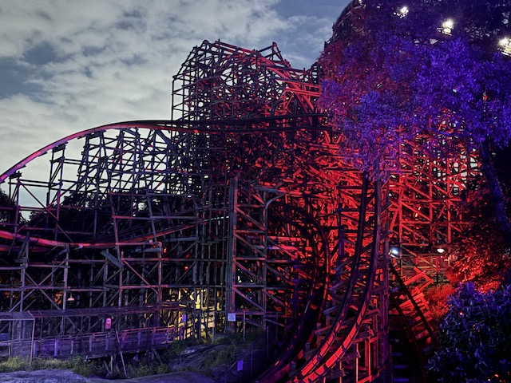
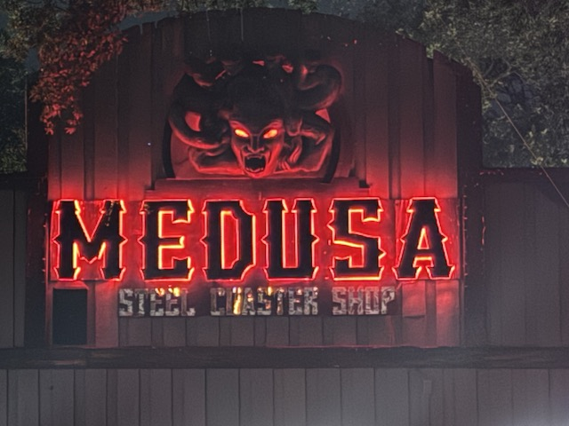
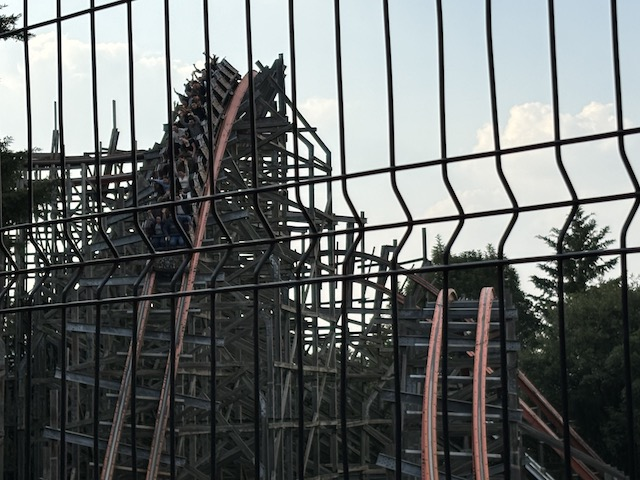
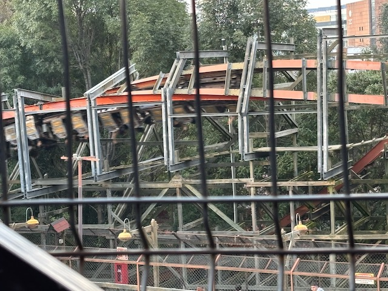
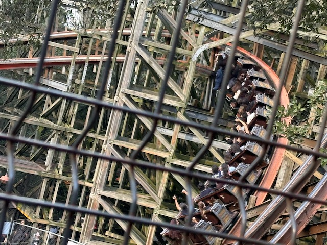
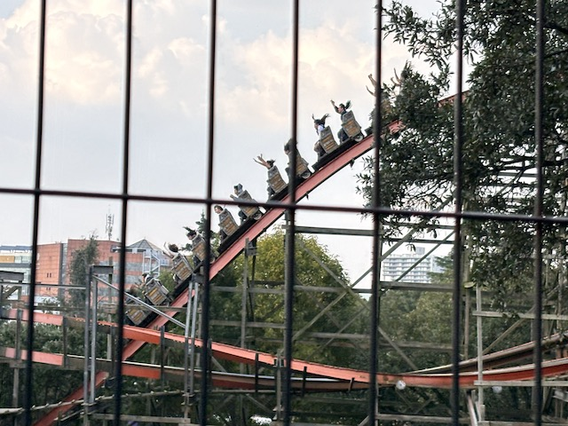
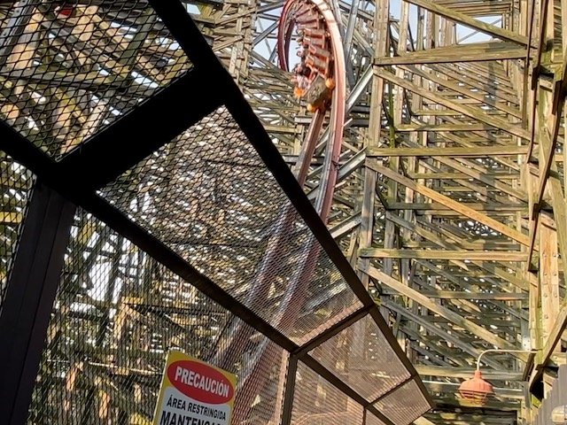
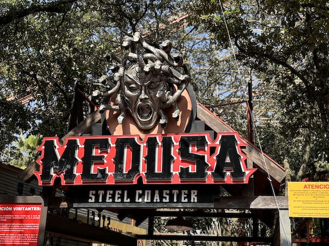

| |
Medusa Steel Coaster Review

Today at Incrediblecoasters, we're going to be reviewing Medusa Steel Coaster at Six Flags Mexico. Now this is a Rocky Mountain Makeover, where they take an old busted sh*tty wooden coaster and turn it into a kickass crazy steel coaster. This is the star attraction at Six Flags Mexico, and while this isn't the best RMC, it still is a solid middle of the pack RMC, and like all RMCs, this is a kickass ride! One thing worth noting is that......out of all the RMCs I've witnessed (and certainly of the ones I've ridden), this one seems to incorporate the most of the original Medusa coaster that this ride replaced. Now I can't say that for sure as I never got to ride the original Medusa. But that honestly doesn't matter since......there's NO WAY the original was better than Medusa Steel Coaster. And even the worst RMC is still an amazing ride. So yeah. This is gonna be a really fun one. After going through the fun house line, we hop in the cars, buckle the seatbelt, pull down the lap bar, and we're off! We roll out of the station, around a turn, and begin climbing the lifthill. Yeah. This is one of the few RMCs without a wacky pre-lift. Get a nice view of Six Flags Mexico as we reach the top. We dip down, and go around a banked turn. And in the middle of that, that banked turn transforms into another one of those barrel roll drops. These things are amazing as they work both as an inversion and a first dorp. So you gain A LOT of speed and some whip. I LOVE these RMC Barrel Roll Drops. They're great on Twisted Timbers and Wind Chaser. And they're great here as well. One of the best first drops you can have. At the bottom of the first drop, we whip around a tight turn and airtime hill before heading up into a hill. There's a nice pop of EJECTOR air here along with a tight banked turn up there, giving us some nice laterals. It's elements like this that reaffirm my belief that this is the RMC most similar to the original ride. We then drop back down to the ground afterwards, gaining more ejector airtime! We go through another sort of curved airtime hill parallel to the tight turn right after the first drop. We then head into a big banked turn, before once again, dropping back down, resulting in some NICE ejector air! We then head into an overbanked turn underneath some of the supports of the first turnaround. And at this point, Medusa Steel Coaster remembers that it's in fact, an RMC, and takes advantage of that fact with a barrel roll. And yeah. This gives us some nice WHIP that really compliments the airtime of this ride. We then go into a low to the ground turn, before rising up into another small banked airtime hill. BAM!!! EJECTOR AIR!!! Go around another low to the ground turn before rising up into a bigger airtime hill. Yeah. The airtime isn't quite as strong here. Bummer. Drop back down into yet another tight turn parallel with the one right after the first drop. We head up another sort of curved helix hill, which gives us some nice laterals. And of course, we get more whip with another barrel roll. Love these sorts of elements on the ride. We go through another banked turn, before rising up, getting one last pop of airtime, before hitting the brake run. Yeah. This is a good ride. A REALLY good ride. Sure. It's not the wildest RMC. It doesn't have the zaniest elements and I can think of others that are more intense and more brutal. But you know what? This is just a fun ride. A really fun solid ride. It has great forces, with some strong ejector air, nice laterals, and there's some great whip in those barrel rolls. And to make things even better, this is a GREAT example of a ride that's good in the morning, but the longer you wait to ride it in the day, the better it gets. Yeah. This ride is MUCH better when its warmed up. So hopefully you manage to get a night ride on this. Cause this is a good ride made even better at night.
9/10
Location: Six Flags Mexico
Opened: 2014
Built by: Rocky Mountain Coasters
Last Ridden: October 18, 2024
Medusa Steel Coaster Photos







Home
|